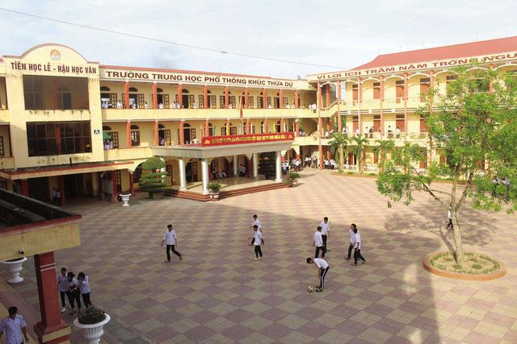
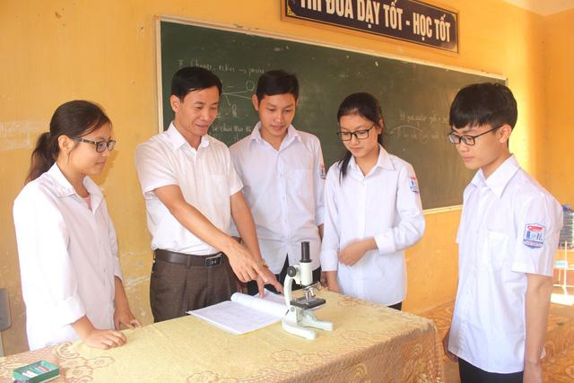

GIỚI THIỆU CHUNG
Địa chỉ: Cầu Ràm - Tân Hương - Ninh Giang - Hải Dương
Email : hdg-thptkhucthuadu@edu.viettel.vn
Điện thoại : 02203.760.555
Địa chỉ: Cầu Ràm - Tân Hương - Ninh Giang - Hải Dương
Email : hdg-thptkhucthuadu@edu.viettel.vn
Điện thoại : 02203.760.555

Cơ sở vật chất Trường THPT Khúc Thừa Dụ ngày càng khang trang, đồng bộ.
Vạn sự khởi đầu nan
Từng bước khẳng định vị thế
Xuất phát từ nhu cầu học tập của con em trên địa bàn và các huyện lân cận, ngày 24/8/1999, Trường THPT Bán công Khúc Thừa Dụ được thành lập theo Quyết định của UBND tỉnh Hải Dương trên diện tích ban đầu gần 2000m2. Thời điểm này, trường chỉ có 3 phòng học cấp 4 với 220 học sinh khối lớp 10 và phòng làm việc của Ban Giám hiệu được mượn tạm từ Trạm Y tế xã Tân Hương.
Đội ngũ giáo viên lúc bấy giờ chủ yếu từ các trường THPT Ninh Giang, THPT Tứ Kỳ về thỉnh giảng và trong thời khắc đó, nhiều cách làm hay, ý tưởng sáng tạo được Ban Giám hiệu đưa ra. Cụ thể, nhà trường mời các thầy cô giáo nghỉ hưu, liên hệ với giáo viên có chuyên môn giỏi, tâm huyết, say nghề đang công tác tại các trường THPT công lập về giảng dạy. Cách làm này đã tạo niềm tin cho học sinh, phụ huynh ngay từ những ngày đầu trường thành lập.
Năm 2000, trường chuyển sang khu đất mới với diện tích hơn 9.000m2 và 5 phòng học kiên cố được xây dựng nhưng vẫn còn thiếu thiết bị dạy học. Năm học đầu tiên, ngoài việc ổn định nề nếp thì các tổ chức, đoàn thể của trường được kiện toàn như: Thành lập Chi bộ Đảng, Đoàn Thanh niên. Đến năm học 2002-2003, nhà trường được tuyển giáo viên cơ hữu theo quy định của Bộ GD&ĐT. Đội ngũ giáo viên trẻ, nhiệt tình, năng động, sáng tạo giúp trường chủ động trong giảng dạy cũng như các hoạt động giáo dục.
Ngày 8/11/2013, UBND Hải Dương ban hành Quyết định về "Chuyển đổi Trường THPT Khúc Thừa Dụ từ loại hình trường phổ thông bán công sang trường phổ thông công lập", đánh dấu bước ngoặt và nâng cao vị thế là ngôi trường THPT thứ 3 hệ công lập trên địa bàn huyện…

Thầy giáo Nguyễn Văn Đức - Hiệu trưởng nhà trường hướng dẫn học sinh thực hành.
Trong quá trình xây dựng và phát triển của nhà trường luôn được sự quan tâm của các cấp, các ngành, huyện Ninh Giang đến chính quyền địa phương. Trong đó, nổi bật là vai trò lãnh đạo của Chi bộ, Đảng bộ nhà trường đã tạo nên khối đoàn kết, thống nhất giữa đội ngũ giáo viên, học sinh và các thế hệ thầy - trò.
Hiện Trường THPT Khúc Thừa Dụ có 24 lớp và gần 1000 học sinh đang theo học. Trường có đầy đủ các phòng học, phòng chức năng trên khuôn viên sư phạm được mở rộng xây dựng hài hòa tạo cảnh quanh thân thiện gồm 3 dãy nhà kiên cố cao tầng, đầy đủ các trang thiết bị phục vụ cho giảng dạy và học tập.
Xác định dạy và học là nhiệm vụ trọng tâm, cho nên nhà trường chú trọng phong trào thi đua 2 tốt "Dạy tốt, học tốt" gắn với việc "Học tập và làm theo tấm gương đạo đức Hồ Chí Minh" và các cuộc vận động của ngành. Đẩy mạnh các hoạt động giúp phát huy mọi tiềm năng của học sinh, phát triển toàn diện. Do đó, chất lượng giáo dục toàn diện trong trường được nâng cao qua các năm và từng bước khẳng định vị thế.
Từ năm học đầu tiên đến nay, Trường THPT Khúc Thừa Dụ đã có gần 23.000 học sinh tốt nghiệp và nhiều học sinh em bước đầu đạt được những thành công nhất định trong mọi lĩnh vực, ngành nghề công tác. Tỷ lệ tốt nghiệp luôn đạt từ 97% - 100%; hàng năm có từ 25% - 45% học sinh đỗ ĐH,CĐ và đạt 219 giải khác nhau trong hội thi Học sinh giỏi tỉnh.
Đội ngũ giáo viên trong trường có lối sống giản dị, gần gũi với học sinh, qua đó tạo sự thân thiện được học sinh tin yêu, kính trọng và phụ huynh tin tưởng. Nhà trường hiện có gần 60 cán bộ, giáo viên, nhân viên, trong đó có 8 giáo viên đạt trình độ Thạc sĩ, nhiều giáo viên đang theo học các lớp cao học, lớp nâng cao. Trong hội thi cấp tỉnh, giáo viên của trường đã đạt 12 giải khác nhau.
Hơn 20 năm qua là quãng thời gian chưa dài nhưng cũng đủ để thầy và trò Trường THPT Khúc Thừa Dụ nhìn lại quá trình thành lập, xây dựng, phát triển. Những thành quả hôm nay được gây dựng từ lòng tâm huyết, sự quyết tâm của các thế hệ đi trước nối tiếp nhau. Đó chính là nền móng cho sự phát triển, vươn mình và từng bước khẳng định vị thế ngôi trường mang tên người anh hùng họ Khúc mảnh đất Hồng Châu.